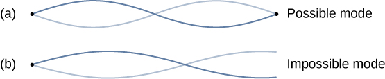
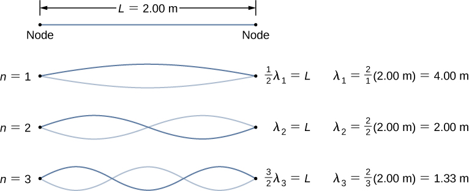
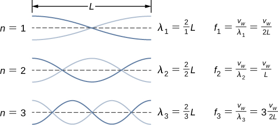

Standing Waves
Sometimes waves do not seem to move; rather, they just vibrate in place. You can see unmoving waves on the surface of a glass of milk in a refrigerator, for example. Vibrations from the refrigerator motor create waves on the milk that oscillate up and down but do not seem to move across the surface. [link] shows an experiment you can try at home. Take a bowl of milk and place it on a common box fan. Vibrations from the fan will produce circular standing waves in the milk. The waves are visible in the photo due to the reflection from a lamp. These waves are formed by the superposition of two or more traveling waves, such as illustrated in [link] for two identical waves moving in opposite directions. The waves move through each other with their disturbances adding as they go by. If the two waves have the same amplitude and wavelength, then they alternate between constructive and destructive interference. The resultant looks like a wave standing in place and, thus, is called a standing wave.
Consider two identical waves that move in opposite directions. The first wave has a wave function of and the second wave has a wave function . The waves interfere and form a resultant wave
This can be simplified using the trigonometric identity
where and , giving us
which simplifies to
Notice that the resultant wave is a sine wave that is a function only of position, multiplied by a cosine function that is a function only of time. Graphs of y(x,t) as a function of x for various times are shown in [link]. The red wave moves in the negative x-direction, the blue wave moves in the positive x-direction, and the black wave is the sum of the two waves. As the red and blue waves move through each other, they move in and out of constructive interference and destructive interference.
Initially, at time the two waves are in phase, and the result is a wave that is twice the amplitude of the individual waves. The waves are also in phase at the time In fact, the waves are in phase at any integer multiple of half of a period:
At other times, the two waves are out of phase, and the resulting wave is equal to zero. This happens at
Notice that some x-positions of the resultant wave are always zero no matter what the phase relationship is. These positions are called nodes. Where do the nodes occur? Consider the solution to the sum of the two waves
Finding the positions where the sine function equals zero provides the positions of the nodes.
There are also positions where y oscillates between . These are the antinodes. We can find them by considering which values of x result in .
What results is a standing wave as shown in [link], which shows snapshots of the resulting wave of two identical waves moving in opposite directions. The resulting wave appears to be a sine wave with nodes at integer multiples of half wavelengths. The antinodes oscillate between due to the cosine term, , which oscillates between .
The resultant wave appears to be standing still, with no apparent movement in the x-direction, although it is composed of one wave function moving in the positive, whereas the second wave is moving in the negative x-direction. [link] shows various snapshots of the resulting wave. The nodes are marked with red dots while the antinodes are marked with blue dots.
A common example of standing waves are the waves produced by stringed musical instruments. When the string is plucked, pulses travel along the string in opposite directions. The ends of the strings are fixed in place, so nodes appear at the ends of the strings—the boundary conditions of the system, regulating the resonant frequencies in the strings. The resonance produced on a string instrument can be modeled in a physics lab using the apparatus shown in [link].
The lab setup shows a string attached to a string vibrator, which oscillates the string with an adjustable frequency f. The other end of the string passes over a frictionless pulley and is tied to a hanging mass. The magnitude of the tension in the string is equal to the weight of the hanging mass. The string has a constant linear density (mass per length) and the speed at which a wave travels down the string equals [link]. The symmetrical boundary conditions (a node at each end) dictate the possible frequencies that can excite standing waves. Starting from a frequency of zero and slowly increasing the frequency, the first mode appears as shown in [link]. The first mode, also called the fundamental mode or the first harmonic, shows half of a wavelength has formed, so the wavelength is equal to twice the length between the nodes . The fundamental frequency, or first harmonic frequency, that drives this mode is
where the speed of the wave is Keeping the tension constant and increasing the frequency leads to the second harmonic or the mode. This mode is a full wavelength and the frequency is twice the fundamental frequency:
![Four figures of a string of length L are shown. Each has two waves. The first one has 1 node. It is labeled half lambda 1 = L, lambda 1 = 2 by 1 times L. The second figure has 2 nodes. It is labeled lambda 2 = L, lambda 2 = 2 by 2 times L. The third figure has three nodes. It is labeled 3 by 2 times lambda 3 = L, lambda 3 = 2 by 3 times L. The fourth figure has 4 nodes. It is labeled 4 by 2 times lambda 4 = L, lambda 4 = 2 by 4 times L. There is a derived formula at the bottom, lambda n equal to 2 by n times L for n = 1, 2, 3 and so on.](CNX_UPhysics_16_06_LabModes.jpg)
The next two modes, or the third and fourth harmonics, have wavelengths of and driven by frequencies of and All frequencies above the frequency are known as the overtones. The equations for the wavelength and the frequency can be summarized as:
The standing wave patterns that are possible for a string, the first four of which are shown in [link], are known as the normal modes, with frequencies known as the normal frequencies. In summary, the first frequency to produce a normal mode is called the fundamental frequency (or first harmonic). Any frequencies above the fundamental frequency are overtones. The second frequency of the normal mode of the string is the first overtone (or second harmonic). The frequency of the normal mode is the second overtone (or third harmonic) and so on.
The solutions shown as [link] and [link] are for a string with the boundary condition of a node on each end. When the boundary condition on either side is the same, the system is said to have symmetric boundary conditions. [link] and [link] are good for any symmetric boundary conditions, that is, nodes at both ends or antinodes at both ends.
Standing Waves on a String Consider a string of attached to an adjustable-frequency string vibrator as shown in [link]. The waves produced by the vibrator travel down the string and are reflected by the fixed boundary condition at the pulley. The string, which has a linear mass density of is passed over a frictionless pulley of a negligible mass, and the tension is provided by a 2.00-kg hanging mass. (a) What is the velocity of the waves on the string? (b) Draw a sketch of the first three normal modes of the standing waves that can be produced on the string and label each with the wavelength. (c) List the frequencies that the string vibrator must be tuned to in order to produce the first three normal modes of the standing waves.
Strategy
- The velocity of the wave can be found using The tension is provided by the weight of the hanging mass.
- The standing waves will depend on the boundary conditions. There must be a node at each end. The first mode will be one half of a wave. The second can be found by adding a half wavelength. That is the shortest length that will result in a node at the boundaries. For example, adding one quarter of a wavelength will result in an antinode at the boundary and is not a mode which would satisfy the boundary conditions. This is shown in [link].
- Since the wave speed velocity is the wavelength times the frequency, the frequency is wave speed divided by the wavelength.
(a) The figure represents the second mode of the string that satisfies the boundary conditions of a node at each end of the string. (b)This figure could not possibly be a normal mode on the string because it does not satisfy the boundary conditions. There is a node on one end, but an antinode on the other. 
Solution
- Begin with the velocity of a wave on a string. The tension is equal to the weight of the hanging mass. The linear mass density and mass of the hanging mass are given:
- The first normal mode that has a node on each end is a half wavelength. The next two modes are found by adding a half of a wavelength.
 - The frequencies of the first three modes are found by using
Significance The three standing modes in this example were produced by maintaining the tension in the string and adjusting the driving frequency. Keeping the tension in the string constant results in a constant velocity. The same modes could have been produced by keeping the frequency constant and adjusting the speed of the wave in the string (by changing the hanging mass.)
Visit this simulation to play with a 1D or 2D system of coupled mass-spring oscillators. Vary the number of masses, set the initial conditions, and watch the system evolve. See the spectrum of normal modes for arbitrary motion. See longitudinal or transverse modes in the 1D system.
Check Your Understanding The equations for the wavelengths and the frequencies of the modes of a wave produced on a string:
were derived by considering a wave on a string where there were symmetric boundary conditions of a node at each end. These modes resulted from two sinusoidal waves with identical characteristics except they were moving in opposite directions, confined to a region L with nodes required at both ends. Will the same equations work if there were symmetric boundary conditions with antinodes at each end? What would the normal modes look like for a medium that was free to oscillate on each end? Don’t worry for now if you cannot imagine such a medium, just consider two sinusoidal wave functions in a region of length L, with antinodes on each end.
Yes, the equations would work equally well for symmetric boundary conditions of a medium free to oscillate on each end where there was an antinode on each end. The normal modes of the first three modes are shown below. The dotted line shows the equilibrium position of the medium.
Note that the first mode is two quarters, or one half, of a wavelength. The second mode is one quarter of a wavelength, followed by one half of a wavelength, followed by one quarter of a wavelength, or one full wavelength. The third mode is one and a half wavelengths. These are the same result as the string with a node on each end. The equations for symmetrical boundary conditions work equally well for fixed boundary conditions and free boundary conditions. These results will be revisited in the next chapter when discussing sound wave in an open tube.
The free boundary conditions shown in the last Check Your Understanding may seem hard to visualize. How can there be a system that is free to oscillate on each end? In [link] are shown two possible configuration of a metallic rods (shown in red) attached to two supports (shown in blue). In part (a), the rod is supported at the ends, and there are fixed boundary conditions at both ends. Given the proper frequency, the rod can be driven into resonance with a wavelength equal to length of the rod, with nodes at each end. In part (b), the rod is supported at positions one quarter of the length from each end of the rod, and there are free boundary conditions at both ends. Given the proper frequency, this rod can also be driven into resonance with a wavelength equal to the length of the rod, but there are antinodes at each end. If you are having trouble visualizing the wavelength in this figure, remember that the wavelength may be measured between any two nearest identical points and consider [link].
Note that the study of standing waves can become quite complex. In [link](a), the mode of the standing wave is shown, and it results in a wavelength equal to L. In this configuration, the mode would also have been possible with a standing wave equal to 2L. Is it possible to get the mode for the configuration shown in part (b)? The answer is no. In this configuration, there are additional conditions set beyond the boundary conditions. Since the rod is mounted at a point one quarter of the length from each side, a node must exist there, and this limits the possible modes of standing waves that can be created. We leave it as an exercise for the reader to consider if other modes of standing waves are possible. It should be noted that when a system is driven at a frequency that does not cause the system to resonate, vibrations may still occur, but the amplitude of the vibrations will be much smaller than the amplitude at resonance.
A field of mechanical engineering uses the sound produced by the vibrating parts of complex mechanical systems to troubleshoot problems with the systems. Suppose a part in an automobile is resonating at the frequency of the car’s engine, causing unwanted vibrations in the automobile. This may cause the engine to fail prematurely. The engineers use microphones to record the sound produced by the engine, then use a technique called Fourier analysis to find frequencies of sound produced with large amplitudes and then look at the parts list of the automobile to find a part that would resonate at that frequency. The solution may be as simple as changing the composition of the material used or changing the length of the part in question.
There are other numerous examples of resonance in standing waves in the physical world. The air in a tube, such as found in a musical instrument like a flute, can be forced into resonance and produce a pleasant sound, as we discuss in Sound.
At other times, resonance can cause serious problems. A closer look at earthquakes provides evidence for conditions appropriate for resonance, standing waves, and constructive and destructive interference. A building may vibrate for several seconds with a driving frequency matching that of the natural frequency of vibration of the building—producing a resonance resulting in one building collapsing while neighboring buildings do not. Often, buildings of a certain height are devastated while other taller buildings remain intact. The building height matches the condition for setting up a standing wave for that particular height. The span of the roof is also important. Often it is seen that gymnasiums, supermarkets, and churches suffer damage when individual homes suffer far less damage. The roofs with large surface areas supported only at the edges resonate at the frequencies of the earthquakes, causing them to collapse. As the earthquake waves travel along the surface of Earth and reflect off denser rocks, constructive interference occurs at certain points. Often areas closer to the epicenter are not damaged, while areas farther away are damaged.
![A string is supported at both ends. The left support is lower than the right support. A mass of 5 kg is suspended from its center. The section of string from the left support to the center is horizontal and is labeled A. The section of string from the right support to the centre is labeled B. It makes an angle of 35 degrees with the horizontal. Arrows labeled F subscript A and F subscript B originate from the center of the string and point along the string towards the left support and the right support respectively.](CNX_UPhysics_16_06_Chal_2.jpg)